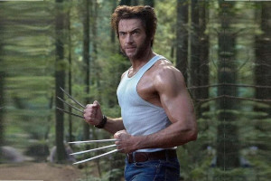
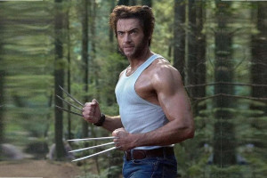

Quem Somos Nós?
Somos Um Site focado em Cultura Geek, atuamos desde 2007 com alguns personagens como O Wolverine,Deadpool,Feiticeira Escarlate entre outros.
Somos Um Site focado em Cultura Geek, atuamos desde 2007 com alguns personagens como O Wolverine,Deadpool,Feiticeira Escarlate entre outros.
